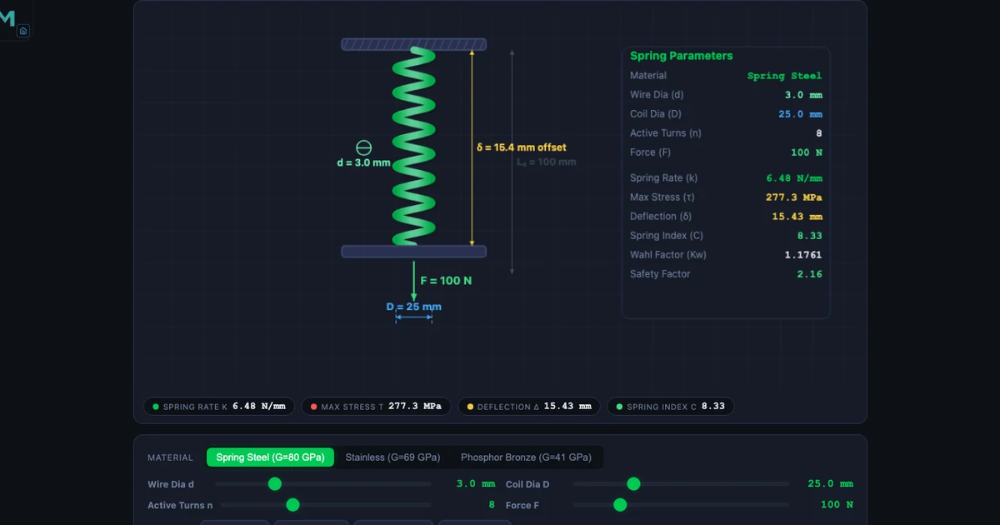
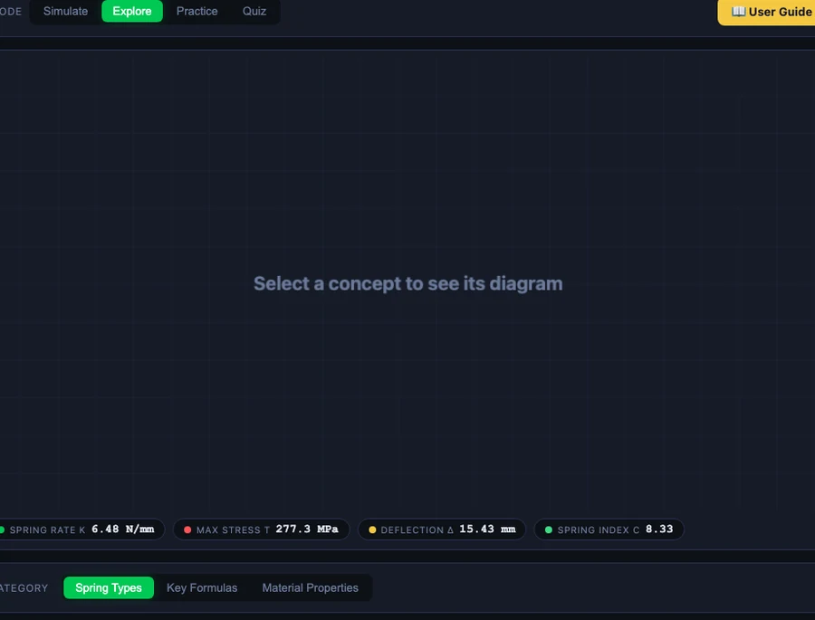

Spring Design Calculator: Wahl Correction Factor and Helical Spring Stiffness Explained

- Helical spring stiffness (spring rate) is k = Gd⁴/(8D³n), where G is the shear modulus, d the wire diameter, D the mean coil diameter, and n the active coils — stiffness scales with d⁴, so doubling wire diameter multiplies k by 16.
- The Wahl correction factor K_w = (4C − 1)/(4C − 4) + 0.615/C corrects shear stress for wire curvature and direct shear, where C = D/d is the spring index; the corrected stress is τ = K_w × 8FD/(πd³).
- Keep the spring index in the range 4 ≤ C ≤ 12 (target 6–9) for reliable coiling, buckling resistance, and a reasonable Wahl correction — K_w ≈ 1.25 at C = 6 and ≈ 1.14 at C = 10.
Most students encounter springs as simple Hooke’s Law devices: F = kx, spring constant given, problem solved. Machine design courses demand more. A designer must choose wire diameter, coil diameter, number of turns, and material — and then verify that the spring will not yield, fail in fatigue, or buckle in service. That verification depends on formulas that students consistently misapply, mostly because they have never seen all the variables interact at once.
The Spring Design Calculator on NHIT VisualLab is built around the full machine-design sequence: stiffness, spring index, Wahl correction, shear stress, and deflection — with three materials (spring steel, stainless steel, phosphor bronze) and the geometry rendered as a live 3D coil. Four modes — Simulate, Explore, Practice, Quiz — step through the topic from first definitions to timed problem-solving.
The Spring Rate Formula — and What Each Variable Actually Does
The spring rate (stiffness) of a helical compression spring is:
\[k = \frac{G d^4}{8 D^3 n}\]
where G is the shear modulus of the wire material, d is the wire diameter, D is the mean coil diameter, and n is the number of active coils. The fourth-power dependence on d is the most important thing in this formula. Doubling the wire diameter multiplies k by 24 = 16. Doubling the coil diameter divides k by 23 = 8. This asymmetry explains why designers tune stiffness primarily through wire diameter and coil diameter rather than through the number of turns.
A worked example from the simulator: spring steel (G = 80 000 MPa), d = 4 mm, D = 30 mm, n = 6 active coils:
\[k = \frac{80000 \times 4^4}{8 \times 30^3 \times 6} = \frac{80000 \times 256}{8 \times 27000 \times 6} = \frac{20\,480\,000}{1\,296\,000} \approx 15.80 \text{ N/mm}\]
Swap the material to phosphor bronze (G = 41 000 MPa) with the same geometry and k drops to 8.11 N/mm — roughly half, because G halved. The stiffness penalty of switching to bronze is immediate and quantifiable without any additional calculation.
Spring Index: The Hidden Design Constraint
The spring index C = D/d appears in every spring formula but is rarely discussed as a design constraint in its own right. Its recommended range is 4 ≤ C ≤ 12.
\[C = \frac{D}{d}\]
Springs with C < 4 require very tight bending of the wire during coiling. Manufacturing defects increase, residual stresses build up on the inner coil surface, and the Wahl correction factor rises steeply — all increasing the risk of premature failure. Springs with C > 12 are prone to buckling (the coil acts like a slender column) and to tangling in storage or assembly. For general-purpose work, a target of C = 6–9 offers the best compromise.
Example: D = 36 mm, d = 4 mm → C = 9. Since 4 ≤ 9 ≤ 12, this spring is in the recommended range and can be manufactured reliably.
Why the Wahl Correction Factor Changes Everything
The basic shear stress in a helical spring wire is τ0 = 8FD/(πd3). This formula comes from treating the wire as a straight bar in torsion. It underestimates the real stress on the inner surface of the coil for two reasons: the wire is curved (curvature stress concentration) and the load applies a direct shear component across the wire cross-section.
A.M. Wahl’s correction factor Kw accounts for both effects:
\[K_w = \frac{4C - 1}{4C - 4} + \frac{0.615}{C}\]
The corrected shear stress then becomes:
\[\tau = K_w \times \frac{8FD}{\pi d^3}\]
For C = 6: Kw = (23/20) + (0.615/6) = 1.15 + 0.1025 ≈ 1.25. So the inner surface of a C = 6 spring is under 25% more stress than the basic formula predicts. For C = 10: Kw ≈ 1.14. The correction is always material, and it is critical for fatigue analysis where the highest stress location is where fatigue cracks initiate.
Worked example: F = 200 N, D = 30 mm, d = 4 mm, Kw = 1.18:
\[\tau = 1.18 \times \frac{8 \times 200 \times 30}{\pi \times 64} = 1.18 \times \frac{48000}{201.06} = 1.18 \times 238.73 \approx 281.7 \text{ MPa}\]
Compare this to the yield shear strength: spring steel (600 MPa), stainless (500 MPa), phosphor bronze (300 MPa). A 281.7 MPa stress against a 300 MPa yield shear strength for bronze represents a safety factor barely above 1.0 — a design that would work on paper with the uncorrected formula but would yield in service.
Deflection and the Elastic Limit

Axial deflection under load is:
\[\delta = \frac{8 F D^3 n}{G d^4} = \frac{F}{k}\]
Example: F = 100 N, D = 20 mm, n = 10, d = 2 mm, G = 80 000 MPa:
\[\delta = \frac{8 \times 100 \times 8000 \times 10}{80000 \times 16} = \frac{64\,000\,000}{1\,280\,000} = 50.0 \text{ mm}\]
The deflection must never compress the spring to its solid length (all coils touching), as that would cause a sudden load spike that can yield the wire. The ratio of operating deflection to available deflection before solid height is the clash allowance, typically kept below 75–80%.
The simulator shows the live coil height shrinking as F increases, making the solid-height constraint visually clear in a way that no formula on its own can convey.
Three Materials, Three Performance Profiles
The material selector switches between three standard spring wire materials, each with a distinct shear modulus:
Spring steel (G = 80 000 MPa, τy = 600 MPa) — the default and most widely used. High strength, consistent wire quality (ASTM A228 music wire is the gold standard), suitable for most general applications in non-corrosive environments.
Stainless steel (G = 69 000 MPa, τy = 500 MPa) — 14% lower stiffness than spring steel for the same geometry. Used where corrosion resistance is required: food-processing, medical, marine applications.
Phosphor bronze (G = 41 000 MPa, τy = 300 MPa) — 49% lower stiffness than spring steel. Non-magnetic, electrically conductive, excellent in wet/chemical environments. Lowest yield shear strength, so Wahl-corrected stress checks are critical.
If spring steel has k = 10 N/mm, the same geometry in phosphor bronze gives k = 10 × (41000/80000) = 5.13 N/mm — a stiffness ratio that follows directly from Gbronze/Gsteel.
How to Use the Simulator for a Real Spring Design Task
A structured design session takes about 20 minutes and follows this sequence:
Step 1 — Set the load and deflection target. Enter the required force F and the allowable deflection δ. The simulator computes the required spring rate k = F/δ as a target.
Step 2 — Choose a wire diameter and coil diameter. Start with a spring index C in the 6–9 range (e.g., d = 4 mm, D = 28–36 mm). Observe the spring index readout and confirm 4 ≤ C ≤ 12.
Step 3 — Adjust active coils until k matches the target. Because k ∝ 1/n, increasing n reduces k. The live readout eliminates the need to recalculate by hand.
Step 4 — Check the Wahl-corrected shear stress. Compare τ against the material’s yield shear strength. For static applications, aim for a safety factor ≥ 1.5. For fatigue applications, compare against the torsional endurance limit (approximately 40–50% of ultimate tensile strength).
Step 5 — Verify the deflection does not reach solid length. Ensure the operating deflection leaves at least 20% of the available travel as clash allowance.
Explore Related Simulators
Spring design connects naturally to the broader machine design and strength-of-materials syllabus. The Hooke’s Law simulator provides the prerequisite context — series and parallel spring combinations, elastic potential energy, and the F–x graph — before students move to the multi-variable spring design problem. For fatigue applications, the Fatigue Life simulator covers the S–N curve and endurance limit that determine whether a spring will survive cyclic loading. The Stress Concentration simulator and Shaft Torsion simulator both deal with the same Wahl-style correction logic applied to notches and shafts respectively, reinforcing the principle that curvature and geometry always raise stress above the nominal value.
The Spring Design Calculator is free, runs in any browser, and requires no account. Open it at mechsimulator.com/tools/spring-design/ and try changing the wire diameter from 4 mm to 5 mm — watch how a single 25% increase in d raises k by more than 140%.